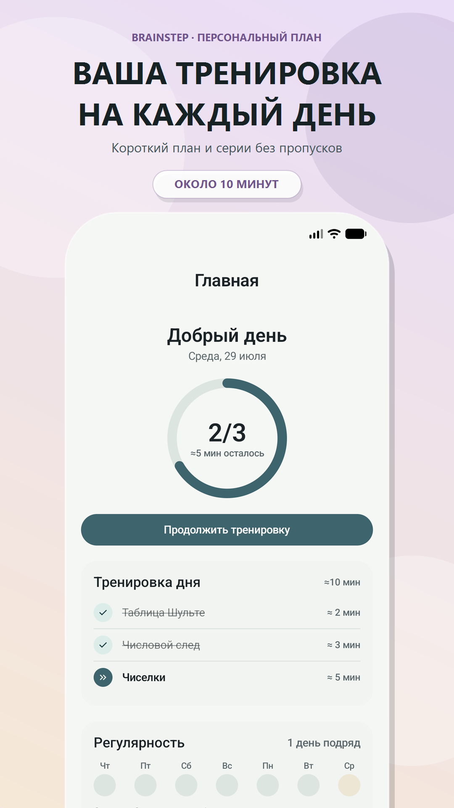
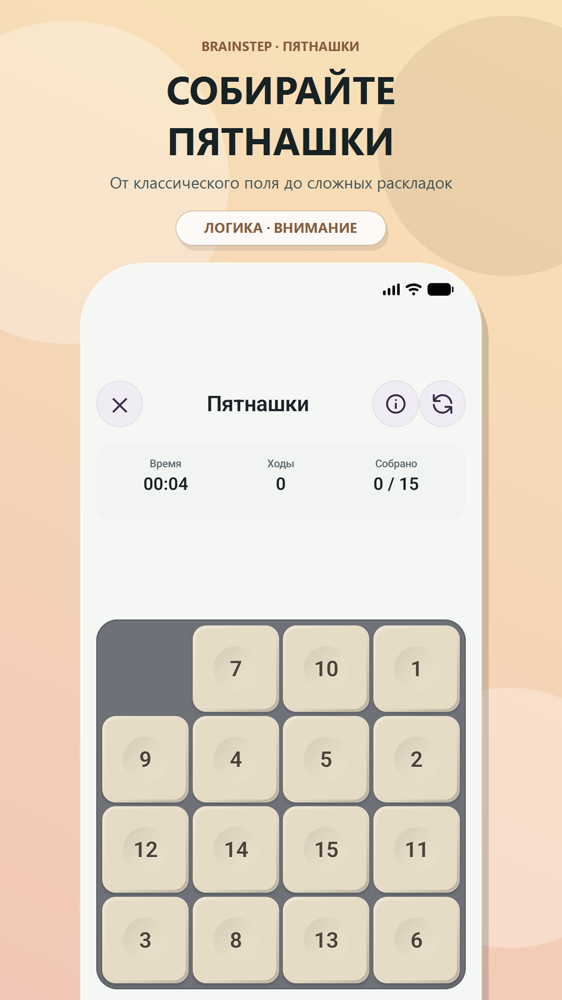
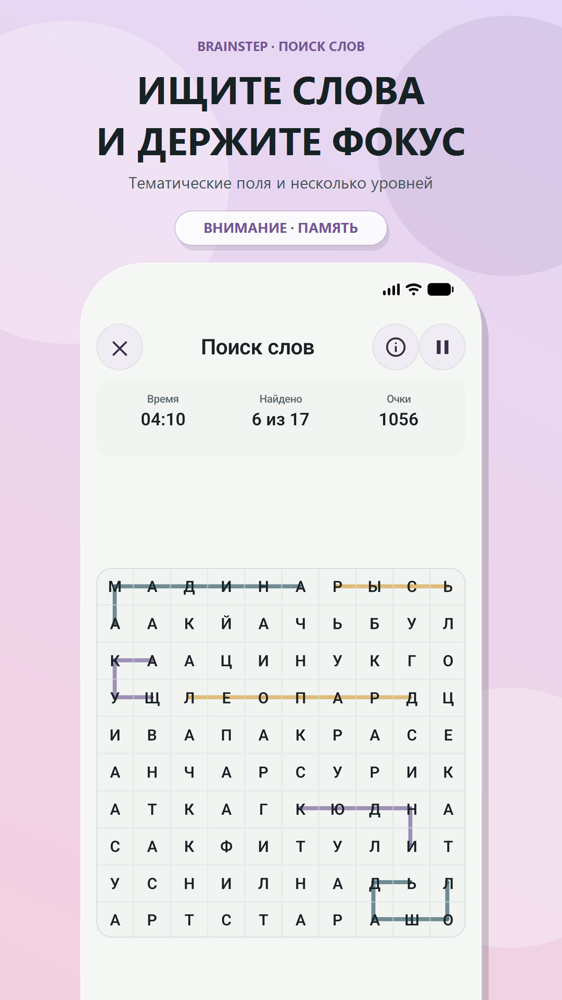
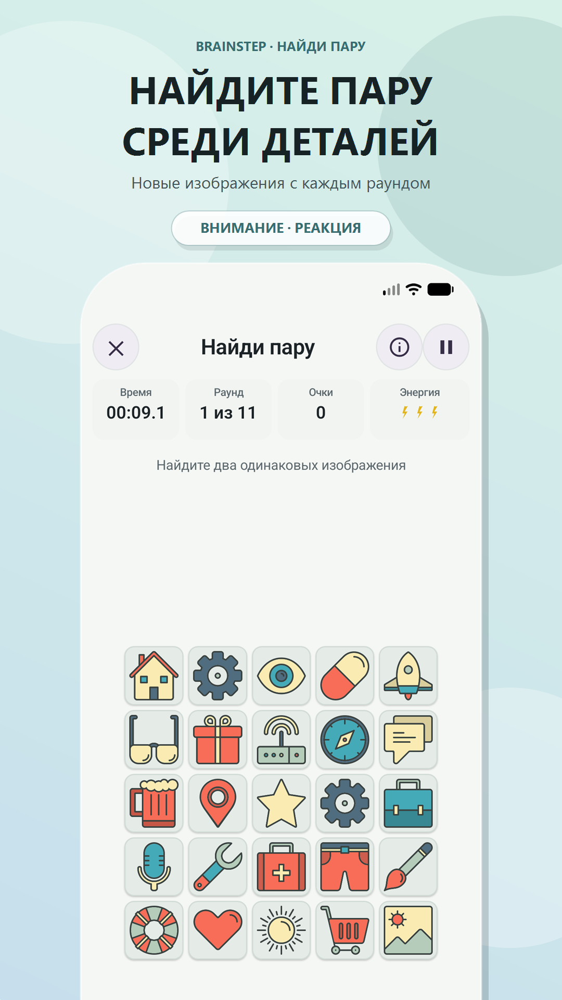
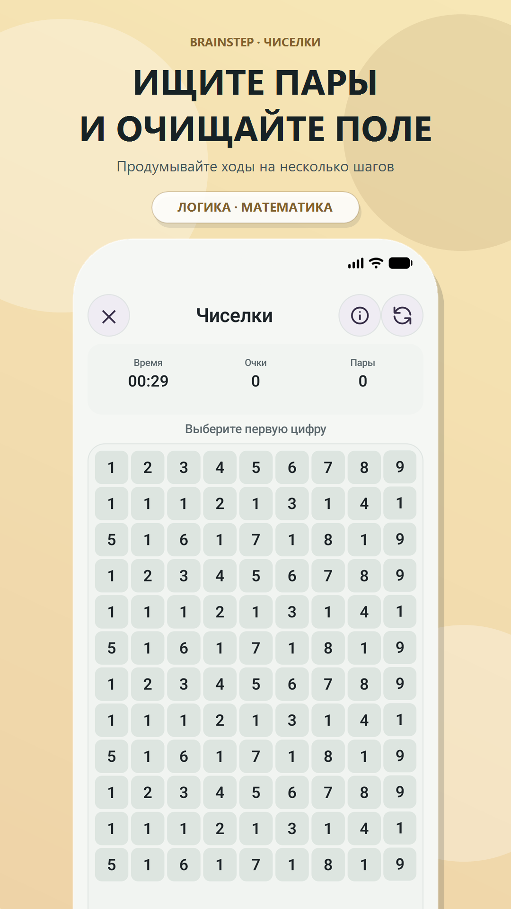
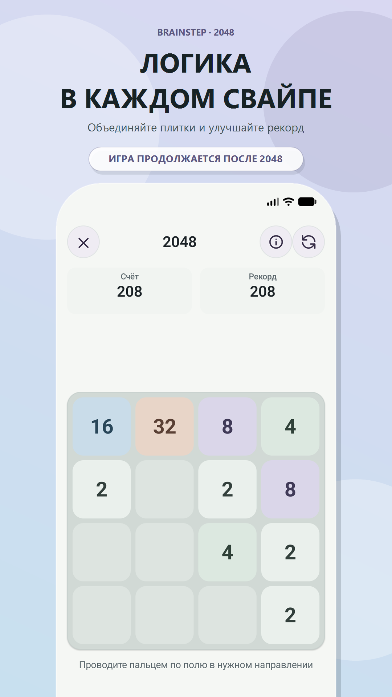
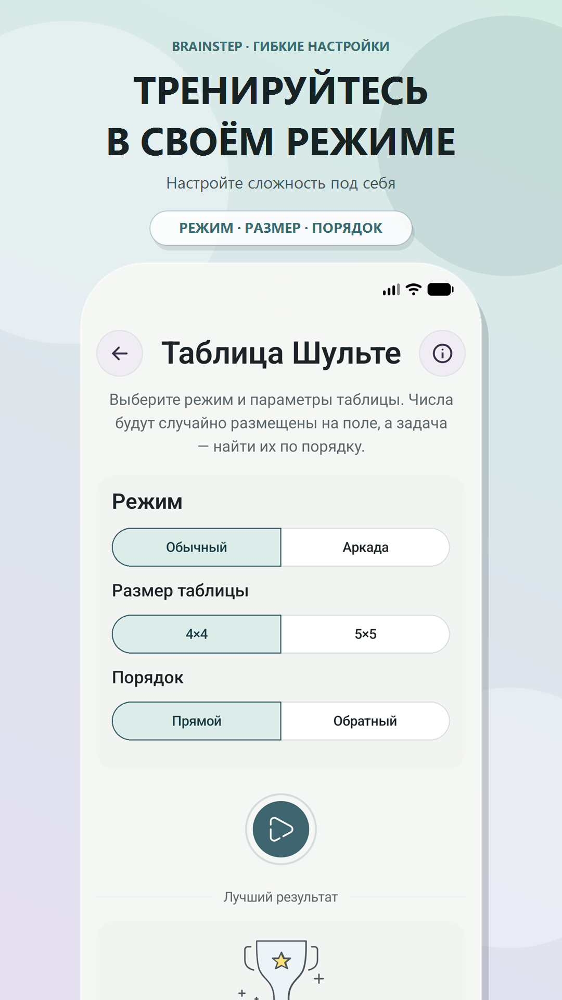
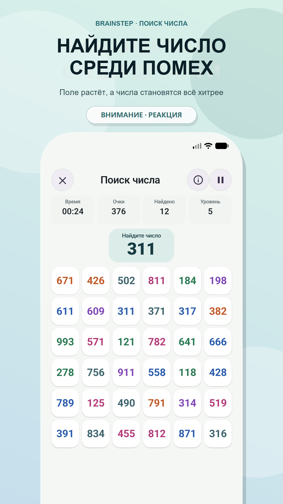
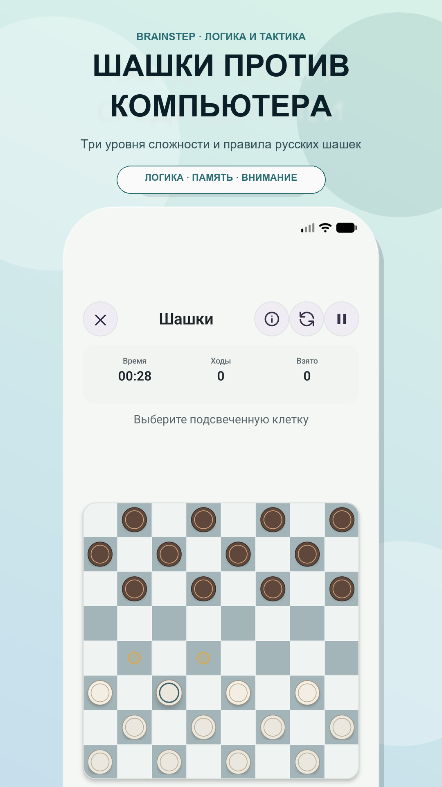
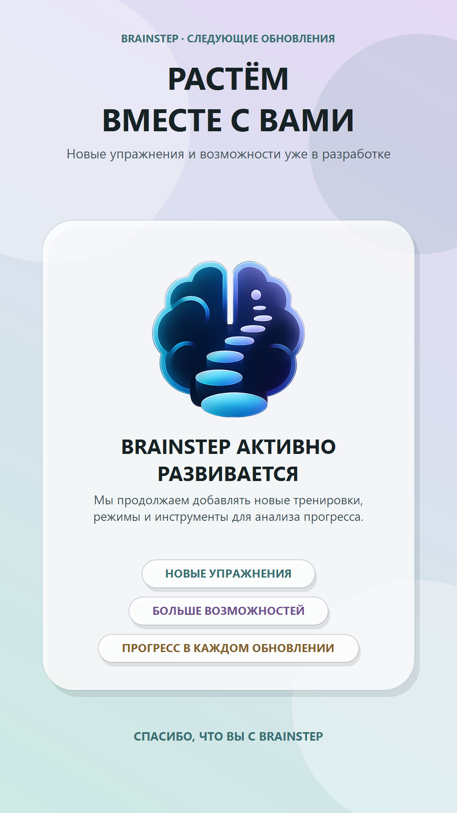

Внимание
Скорость зрительного поиска и способность удерживать фокус, не отвлекаясь на похожие элементы рядом.
- Таблица Шульте
- Поиск числа
- Найди пару
19 упражнений на внимание, память, логику, математику и реакцию. Тренируйтесь от пяти минут в день — без рекламы, регистрации и обязательного интернета.

Пять навыков, по которым считается индекс прогресса. У каждого упражнения есть основной - и часто один-два дополнительных.
Скорость зрительного поиска и способность удерживать фокус, не отвлекаясь на похожие элементы рядом.
Поиск закономерностей, планирование ходов вперёд и проверка гипотез в головоломках.
Умение удерживать в уме расположение, порядок и промежуточные значения.
Устный счёт и быстрая оценка выражений без вычисления в столбик.
Не отдельное упражнение, а измерение внутри большинства из них: темп ответа учитывается наравне с точностью.
Тренировка не требует подготовки: приложение открывается сразу на плане дня.
Набор собирается автоматически: 2 упражнения для пятиминутки, до 7 - для получасовой тренировки. Можно заменить или пропустить любое.
Сложность подстраивается под последние попытки. Вы соревнуетесь не с другими людьми, а со своими предыдущими результатами.
Календарь активности, серия дней и индекс по пяти навыкам показывают, как результаты меняются со временем.
В BrainStep появились русские шашки против компьютера и новое упражнение «Цепочка вычислений». Интерфейс адаптирован для планшетов и складных устройств, а инструкции стали нагляднее и теперь повторяют внешний вид настоящих игровых полей.
Три уровня сложности, правила русских шашек, обязательные взятия и летающие дамки.
Запоминайте числа и операции, выбирайте удобный темп показа и постепенно увеличивайте длину последовательности.
Список соответствует текущему релизу и растёт вместе с обновлениями приложения.
Находите числа в правильном порядке как можно быстрее.
Запоминайте, какие лампы светились, и восстанавливайте их расположение.
Находите спрятанные слова, соединяя соседние буквы.
Находите единственную пару одинаковых изображений среди открытых карточек.
Следуйте меняющемуся правилу: цвет текста или его значение.
Находите нужное число среди похожих, пока поле растёт.
Находите одинаковые цифры и пары с суммой 10, чтобы очистить поле.
Заполняйте поле 9×9 в серии постепенно усложняющихся головоломок.
Открывайте безопасные клетки и проверяйте логические гипотезы.
Объединяйте одинаковые плитки, планируя ходы наперёд.
Расставляйте плитки по порядку, планируя последовательность ходов.
Находите точную перестановку букв в загаданном слове.
Продумывайте ходы, проводите комбинации и играйте против компьютера.
Открывайте карточки попарно и находите все совпадения.
Повторяйте последовательность появления картинок на поле 5×5.
Запоминайте скрытые карточки и определяйте, совпадают ли крайние значения.
Решайте случайно сгенерированные примеры в уме.
Что больше: выражение сверху или снизу? Отвечайте прикидкой.
Считайте по шагам и удерживайте результат в памяти.
Темп ответа входит в оценку почти половины упражнений каталога, наравне с точностью.
Листайте галерею пальцем или стрелками.











Индекс прогресса считается отдельно для внимания, памяти, логики, математики и реакции — по вкладу каждого упражнения в конкретный навык.

Прогресс и настройки хранятся на устройстве. BrainStep не требует создания аккаунта и готов к тренировке даже без сети.
Политика конфиденциальности →Если чего-то не хватает - напишите нам, мы отвечаем на письма.
Бесплатно. В BrainStep нет рекламы, платных упражнений и покупок внутри приложения.
Нет. Все 19 упражнений и статистика работают офлайн - подключение нужно только для установки и обновлений.
Нет. Аккаунт не создаётся, профиль остаётся локальным и хранится в памяти устройства.
От 5 до 30 минут на выбор. Тренировка на 5 минут - это 2 упражнения, на 30 минут - до 7.
На телефонах и планшетах с Android 8.0 и новее. Установка - из RuStore.
Нет. BrainStep - тренажёр для регулярной практики: показатели помогают сравнивать ваши результаты между собой и не являются медицинским измерением.
BrainStep доступен бесплатно в RuStore. Каталог упражнений растёт вместе с обновлениями.